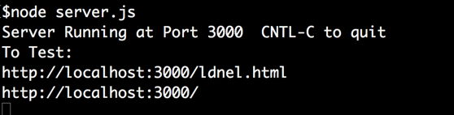

COMP 2406 Winter 2023 Assignment 3:
Chat Server with Private Messaging
Due Wed. Mar. 15 by 10:00pm submitted to brightspace
Revisions:
Revisions will be noted here
In this assignment you are going extend the demonstration code that implements a simple chat server based on web sockets. The assignment is based on your work in tutorial 5 and the chat server demonstration code in the course notes section of Real-Time Collaboration with Web Sockets.
For this assignment you will be installing the npm module Socket.io (as is done in the demonstration code).
Marking: This assignment is based on 15 (green) design requirements numbered R1.1...R5.2 for a total of 30 marks.
Marks are awarded, or deducted, based on requirements as follows. Note: TAs will be running and evaluating your assignment code so we are not requesting a demonstration video for the four term assignments(only for the final project).
| Req Type | Assignment Grading |
|---|---|
| R0.x | Critical Submission and Intent Requirements. Assignment gets 0 if any critical submission requirement (shown in red) is not met. |
| R0.x | Good Practice Requirements. You lose 2 marks for each good practice requirement (shown in amber) not met. |
| Rx.x | Design Requirements. You earn 2 marks for each design requirement (green) satisfied and well implemented; 1 mark if it's partly met or met but not well implemented; and 0 if it's not met or attempted. |
Submission and Good Programming Practice Requirements
The following requirements pertain to all your assignments regardless of what your application is supposed to do (i.e. regardless of the design requirements). These requirements are to ensure that your code is usable, readable, and maintainable.
R0.0 UNIQUENESS REQUIREMENT. The solution and code you submit MUST be unique. That is, it cannot be a copy of, or be too similar to, someone else's code, or other code found elsewhere. You are, however, free to use any code posted on our course website as part of our assignment solution. [Assignment mark =0 if this requirement is not met.]
R0.1 CODE SUBMISSION ORGANIZATION AND COMPILATION: You should submit all the code files and data files necessary to compile
and run your app. The TA's will execute your app by following the instructions you provide in the README.txt file. You must submit a single.zip formatted file to brightspace. (not .rar or
.tar or whatever). Though you are permitted to write code on Windows, Linux, or Mac OS the code must be generic enough to be OS agnostic. (See also the the requirement below about not submitting the node_modules directory). Your code must work with at least a current Chrome browser and version 16.x.x of node.js
[Assignment mark =0 if this requirement is not met.]
R0.2 README FILE: Your submission MUST include a README.txt file (with .txt extension) telling the TA how to setup and run your app. The TA will NOT look into your code to figure out how to start up your app. Here are the critical things your README.txt MUST contain:
-
MUST: Your name, student number. (This is where you claim to be the author.)
-
MUST: If your code requires external modules (like npm modules) you must tell us what command to run to install them. (e.g.
npm installornpm install module_name) -
MUST: You must tell us how to launch your server. That is, what command to exectute to launch your code (e.g.
node server.js. ) -
MUST: You must tell us what URL to visit with the browser to use your app. (e.g. visit:http://localhost:3000/mytest.html?name=Louis.)
-
Recommended: Have your server output to the console what URLs we should visit with the browser.

-
Recommended: Version: node.js version number and operating system you tested on your code on.
-
Recommended: Version: node.js version number and operating system you tested on your code on.
If any of the MUST have items are missing we will not grade your assignment (the mark will be 0).
RECOMMENDED: The following are recommend but the assignment will still be graded if they are missing.
[Assignment mark =0 if this requirement is not met.]
R0.3 INTENT REQUIREMENT: The solution
and code you submit must comply with the intent of the assignment. For example if you are required to build a node.js/javascript server and you choose to build an apache/PHP server instead you will have violated the intent of the assignment
even though the user input-output experience might be the same. As another example, if you are asked to build a "thick client" solution where the server just supplies data and the browser renders it but you build a "thin
client" solution where the server renders all the HTML pages you will have violated the intent even though the user's experience would look the same.
[Assignment mark =0 if this requirement is not met.]
R0.4 VARIABLE AND FUNCTION NAMES: All of your variables and functions should have meaningful names that reflect their purpose. Don't follow the convention common in math courses where they say things like: "let x be the number of customers and let y be the number of products...". Instead call your variables numberOfCustomers or numberOfProducts. Your program should not have any variables called "x" unless there is a good reason for them to be called "x". (One exception: It's OK to call simple for-loop counters i,j and k etc. when the context is clear and VERY localized.) Javascript variables don't have types which can help clarify their meaning so choosing good names is even more important. Many functions in javascript are annonymous (have no name) and so the name of the variable that refers to them is even more important.
Remember: any fool can write code that a computer will understand; the goal is to write code that we can understand. [Minus 2 marks from assignment if this requirement is not met.]
R0.5 JAVASCRIPT IN STATIC HTML: Your static html pages should NOT make direct reference to javascript functions. Don't do something like the following:
<button type="button" onclick="myFunction()">Try it</button>
Instead do something like this:
<button type="button" id="submit_button">Try it</button>
and elsewhere in your javascript file say:
document.getElementById('submit_button').addEventListener('click', myFunction)
[Minus 2 marks from assignment if this requirement is not met.]
R0.6 COMMENTS: Comments in your code must coincide with what the code actually does. It is a common bug to modify or cut-and-paste code and forget to modify the comments and so you end up with comments that say one thing and code that actually does another. Don't over-comment your code - instead choose good variable names and function names that make the code "self commenting". Don't be reluctant to create local variables so that the variable name provides more clarity -there is no prize for having the fewest lines of code. [Minus 2 marks from assignment if this requirement is not met.]
R0.7 MODULARIZATION: Your client-side and server-side javascript should not be in two giant files. Break you client-side javascript into smaller manageable and readable files and include them individually with <script> tags in your html document. On the server-side use requires or imports appropriately to organize your code into managable size files. [Minus 2 marks from assignment if this requirement is not met.]
R0.8 BLOATED CODE: If your assigment uses external modules installed with npm, DON'T submit the node_modules directory with your code (it's potentially huge). Remove that directory and only submit the package.json and package-lock.json files. The TAs will use these files to intall the required modules. NPM modules are platform specific and must be reinstalled on the markers platform (they would have to remove your node_modules directory). [Minus 2 marks from assignment if this requirement is not met.]
R0.9 CITATION REQUIREMENT: If you use code from other sources you should cite the source in comments that appear with the code. If the source is an internet website then put the URL in the comments. You may use bits of code from outside sources but this may not form the complete solution you are handing in.You DON'T have to cite demo code we provide on the course web site or with tutorials and assignments, however that code should not be used for things you post publicly (like on GitHub). [Minus 2 marks from assignment if this requirement is not met.]
VERY IMPORTANT: Any sample code fragments provided may have bugs (although none are put there intentionally). You must be prepared to find errors in the requirements and sample code. Please report errors so they can be fixed and an assignment revision posted.
Application Design Requirements
The demonstration chat server code provides a simple web socket-based server that allows multiple browser clients to chat with each other. In tutorial 5 you will have gained some experience using the socket.io library to turn a polling-based collaborative application into an event driven one using web sockets.
Try the chat server code to see how it works. (Better yet put it on your openstack image and chat with other students in the class.)

Note in the demonstration code the chatting is indented every other line using some CSS styling. You don't need to keep that if you don't want to. Also you can change the cosmetics of the buttons and such as you like.
For this assignment we want you to finish building the chat application by modifying the provided code to accommodate the following design requirements.
1) Connection Requirements
R1.1 Add a dedicated text field and a button labelled connect as to the web page. Make sure the button is next to or just below the text field on the page.
R1.2 A user should NOT be allowed to chat with others until they enter a user name in the dedicated field and press the "connect as" button. At that point they should be allowed to chat.
R1.3 Only user names that start with a letter and have only letters and numbers should be accepted as valid user names. If the user name does not comply the text field should be blanked out and no successful connection established when the user presses their connect as button. [Note: we will NOT be testing the scenario where two users accidently choose the same user name.]
R1.4 The application should show an acknowledgement from the server when a client has successfully connected as a user.
2) Chatting Requirements
R2.1 When a user types a message in the text field associated with the SEND button and presses the button, or presses the enter key on their keyboard, that message should appear on all the clients windows currently connected to the server.
R2.2 Messages should only be delivered to clients who have successfully registered as users. (That is, it is not enough to just load the webpage as is done in the demonstration code.)
R2.3 Your interface should have a dedicated CLEAR button. When the clear button is pressed all of the current chat content on that user's page should be cleared (erased). The chat screens of other users should not be affected. This feature allows a local user to "clear their screen".
R2.4 The chatting should be implemented using web sockets and not use a polling timer.
3) Speaker Display Requirements
R3.1 When someone's message is being displayed it should be prefixed by their user name followed by a ":". In the demonstration code you just see a message like
Hello
but we want the message to be displayed like
ldnel: Hello
The sender's user name should be displayed like that on all client browsers including that of the sender.
R3.2 When a user is looking at their own browser window the messages they sent should appear in blue. Messages from other users should appear in black (except private messages as described below). That way it will be easier for someone to spot their own sends.
R3.3 The colouring of messages should be implemented using CSS styling in your code.
4) Private Message Requirements
R4.1 If a user enters, say, ldnel: How Are You? in the send text field and then hits the SEND button or presses their enter key then the message should only be delivered to user ldnel and also be displayed on the sender's client. [Note: ideally the sender should still be allowed to use a ":" character in their message body but we won't test for that.]
R4.2 Private messages should be displayed in red on the chat clients. The message should also be shown in red on the sender's client. Again, colouring should be implemented with CSS styling.
5) Group Private Message Requirements
R5.1 If a user enters, say, lou, sue, anne: How Are You? in the send text field and then hits the send button or presses their enter key then the message should only be delivered to users lou, sue and anne and also be displayed on the sender's client. [Note: ideally the sender should still be allowed to use a ":" character in their message body but we won't test for that.] You should allow the user to have spaces after the comma or not. That is, accept both lou, sue, anne: How Are You?or lou,sue,anne: How Are You?
R5.2 Group private messages should also be displayed in red on the chat clients. The message should also be shown in red on the sender's client. Again, colouring should be implemented with CSS styling.